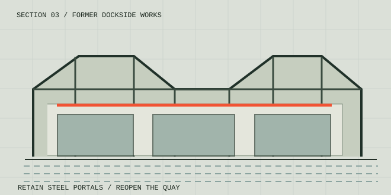

REUSE THE PORTALS
The existing steel rhythm shapes new adaptable volumes.
The working waterfront opens to the city.

Dockside buildings often sit between a city and its water. This speculative study reimagines a former works building as an open threshold for making, culture and gathering.
The existing steel portal frames remain the organising element. New lightweight infill introduces workshops, an adaptable exhibition room and sheltered seating while preserving the robust industrial character.
A continuous accessible route connects the city to the quay. The project treats public access as an architectural material rather than an afterthought.
The existing steel rhythm shapes new adaptable volumes.
A level pathway reconnects street life to the waterside.
Flexible bays host repair, making, exhibitions and gatherings.